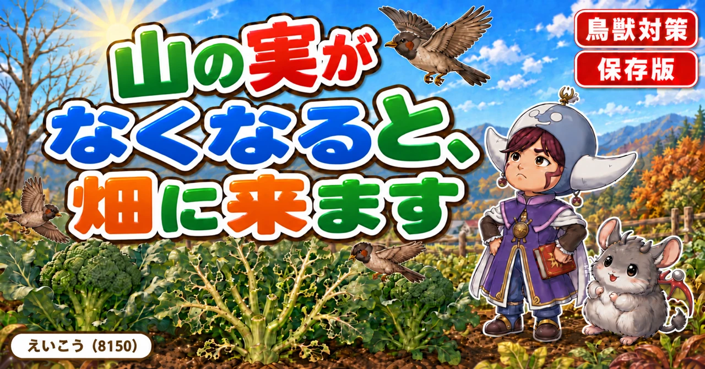
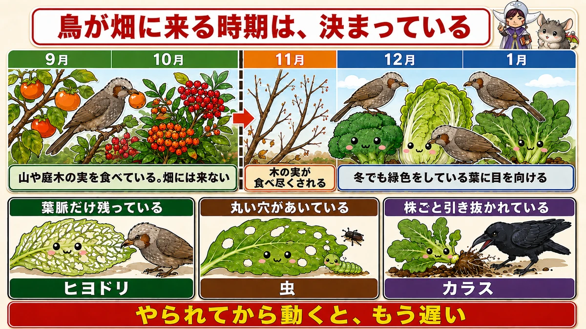
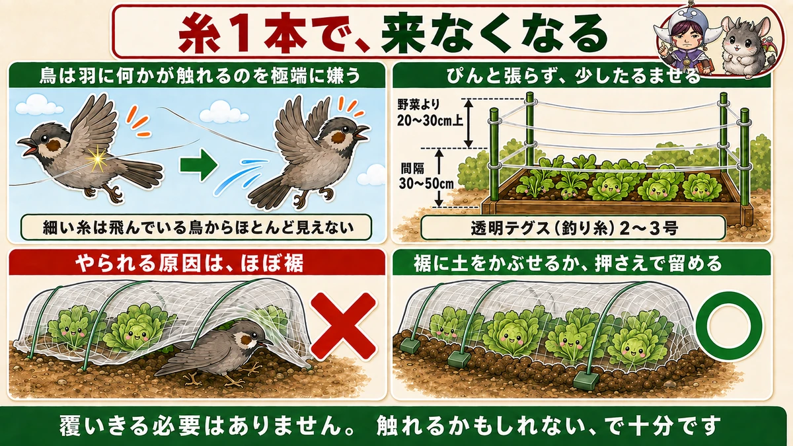
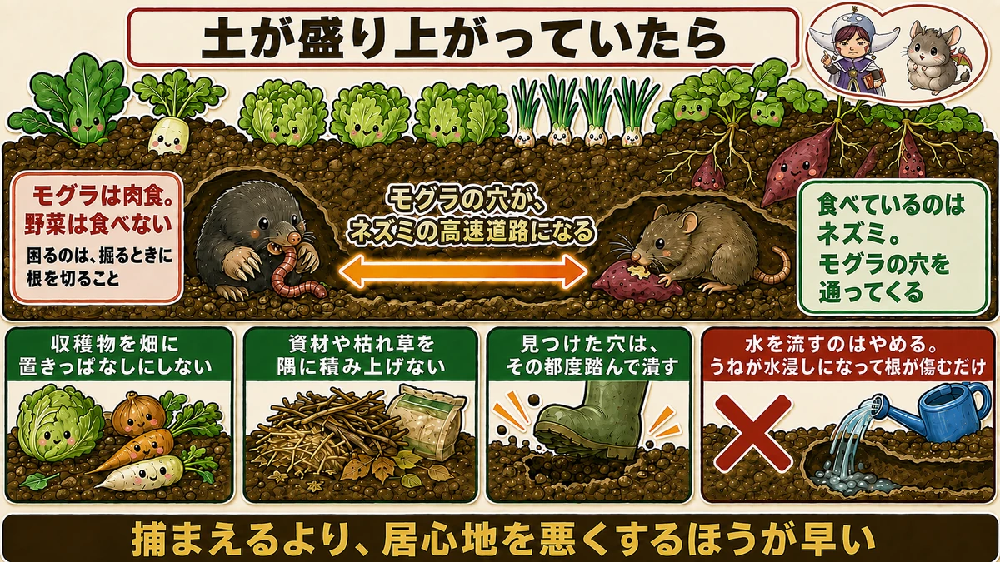

畑の鳥害・獣害対策｜テグスの張り方・ネットは裾が勝負・作物別の守る時期

どうも、8150（えいこう）です🌱 家庭菜園歴8年、理科の教員免許を持っていて、有機・無農薬で野菜を育てています。
📖 この記事の目次
この記事で分かること
- 鳥と獣は、ねらう野菜も、入ってくる場所もちがいます。まず「誰が・どこから」を見分けるのが出発点です。
- 鳥は上から来ます。テグス（細い糸）や、全体を覆うネットで防ぎます。
- 獣は下から来ます。ネットを張るなら、地面との境目（裾）をふさぐのがいちばん大事です。
- 冬は鳥の被害が増えます。ブロッコリーの葉から始まって、白菜やキャベツへ広がっていきます。
- 豆の種、落花生、トウモロコシ、いちご、秋の芋は、それぞれ守る時期がちがいます。
- どんな対策も「これで完ぺき」とは言い切れません。組み合わせて、ようすを見ながら足していきます。
楽しみにしていた野菜が、収穫の直前にやられていたときのがっかり感、ほんまにきついですよね。
ブロッコリーの葉がずたずたになっていたり、トウモロコシがひと口だけかじられて捨てられていたり。虫ならまだしも、鳥や獣にやられると「次も来るんちゃうか…」と不安にもなります。
でも、鳥と獣にはそれぞれクセがあって、そこが分かると守り方もはっきりしてきます。この記事では、薬を使わずにできる、物で守る方法をまとめました。
早見：鳥害・獣害対策の基本（ひと目で分かる目安）
誰が、何を、いつねらうか
- 冬（12〜2月）：鳥。ブロッコリーや茎ブロッコリーの葉 → 白菜・キャベツの玉 → そら豆やスナップえんどう、の順に食べ進むことがあります。
- 春（種まきのころ）：鳩やカラス。まいたばかりの豆の種や、出たばかりの芽。
- 初夏：ヒヨドリやカラス。赤く熟したいちごやトマト。
- 夏：カラス・鳩・ムクドリ・ヒヨドリ、そしてアライグマやハクビシン。実が太ってきたトウモロコシ。
- 夏の終わり〜秋：カラス。落花生（収穫前から、まわりの株を少しずつ）。
- 8月下旬〜10月初め：イノシシやハクビシン（地域による）。さつまいも。
- 秋：ネズミ、アライグマ、ハクビシン。さつまいも、里芋、秋じゃがなどの土の中の芋。
対策の種類と、向いている相手
- テグス（釣り糸のような細い糸）：鳥。上からの侵入を防ぐ。手軽だが、えさが少ない時期は防ぎきれないこともある。
- 防鳥ネット・防虫ネット：鳥。全体を覆えば、テグスより確実。
- 獣害ネット：獣。下から潜りこむのを防ぐ。裾をふさぐのが命。
- 不織布：まいたばかりの種。鳥よけと乾燥よけを兼ねる。
- 苗で育てる：豆など、種のうちに食べられやすいもの。
- 電気柵：獣。この記事では設置方法は扱いません（あとで説明します）。
覚えておきたい数字
- ブロッコリーのテグス：150cmの支柱を1株に4本。糸の間隔は10cmくらい。
- 落花生のテグス：株から40cmほど離して支柱を立てる。高さ30cmくらいの段から始めて、腰の高さ、目線の高さ（170cmくらい）と段を分ける。
- 落花生の糸を張る時期：収穫の直前ではなく、1か月くらい前。
- トウモロコシ：横は防虫ネットで囲い、上はテグスをジグザグに。縦にも1〜2本。
- 獣害ネットの高さ：1mあれば飛びこえられないという説明と、1m20cmでも裾からもぐられた例があります（高さだけでは決まりません）。
この早見の使い方
いろいろ並べましたが、全部やる必要はありません。
まず、自分の畑で「何がやられたか」「どこから入られたか」を見て、相手を決めます。そのうえで、その相手に合った対策を1つ選んでください。鳥なのに獣用の対策をしても、獣なのに上だけ守っても、効かないんですよね。
相手が分かれば、半分は勝ったようなもんです☺️
作業の手順（見分ける→時期を知る→守る）
1. 犯人を見分ける

まずは「誰がやったか」です。食べられ方と、残された跡を見てください。
鳥のサイン
- 葉がずたずたに破られて、茎だけになっている（冬のブロッコリーなど）
- 葉が、同じ高さでそろってかじり取られている
- 白菜やキャベツの玉が、くちばしでつつかれてぼろぼろ
- まわりに、大きめの鳥のふんが落ちている
- 熟した実だけが、つつかれている
獣のサイン
- トウモロコシの皮に、爪でひっかいたような跡がある
- 実をひと口だけかじって、捨ててある
- 株ごと倒されたり、折られたりしている
- ネットの裾が持ち上げられたり、無理やりこじ開けられたりしている
- 土が掘り返されている
ひとつ注意したいのが、「食べる」被害と「動かす」被害があることです。植えたばかりのにんにくが、土から抜かれて転がっていた、ということもあります。食べるわけではなく、くちばしでつまんで遊んでいるように見えることもあるようです。浅く植わって見えている部分は、土をかけて隠しておくと安心です。
葉に穴があいていると、つい虫のせいだと思いがちです。でも冬に葉がずたずたになっていたら、虫ではなく鳥のことが多いです。季節と食べられ方をセットで見てくださいね。
2. 守る時期を知る
鳥や獣は、「おいしくなったころ」をちゃんと分かっています。だから、被害が出てから対策しても遅いことが多いんです。
守り始める目安
- 豆の種：まいたその日から。
- いちご、トマト：実が色づき始める前に。
- トウモロコシ：ひげが出て、実が太り始める前に。
- 落花生：収穫の1か月くらい前には。
- さつまいも・里芋など：芋が太り始めるころから。
- 冬の葉物：寒くなって、えさが少なくなる前に。
「被害があったら、すぐ対策」でもいいのですが、一度味を覚えた鳥や獣は、また来るんです。最初の一口を食べさせないことが、いちばんの対策かもしれません。
対策を始める前に、確かめておくこと
- 相手は鳥か、獣か（食べられ方と跡で見分けた）
- 鳥なら上から、獣なら下から、を意識した
- 被害が出やすい時期より前に始める
- ネットは、相手と作物に合った種類を選んだ
- 張ったあと、見回る日を決めた
この5つを押さえておくだけで、「せっかく張ったのに効かなかった」がぐっと減りますよ。
3. 鳥にはテグスを張る

テグスは、釣り糸のような細い糸です。野菜のまわりの空中に張っておくと、鳥が近づいたときに羽が触れて、びっくりして逃げていきます。
ブロッコリーなど1株ずつ守る場合の張り方
- 150cmくらいの支柱を、1株のまわりに4本立てる
- 支柱は、葉から少し離して立てる（葉が外にはみ出すと、そこに鳥がとまって中に入られます）
- 一番下から、糸を支柱に回していく
- 支柱に回すときは、外側から入って、上を通して下ろし、また外へ抜く。こうすると糸がひっかかって、ずれにくくなります
- 間隔10cmくらいで、らせん状に上へのぼっていく
- 一番上まで行ったら止める
- 上から入られないように、てっぺんに防鳥テープをばってんに張る
防鳥テープ（キラキラ光るテープ）は、ぴんと張らず、少しゆとりを持たせて、ひねりを入れて張るのがコツです。風でゆれて光るので、効果が出やすくなります。
さらに強くしたいときは、横の面にも斜めに糸を足して、鳥が頭を入れにくくします。
糸を巻きつけるときは、厚紙や板に一度巻いておくと、落としても転がらず、糸がからまりにくくて作業がとても楽になります。
ネットの種類のちがい
お店にはいろいろなネットが並んでいて、どれを買えばいいか迷いますよね。名前が似ていても、役割はけっこうちがいます。
- 防鳥ネット：鳥よけ用。網の目が大きめで、蜂などの虫は通れることが多い。
- 防虫ネット：虫よけ用。網の目がとても細かい。鳥も虫も入れないが、受粉をしてくれる蜂も入れない。
- 獣害ネット：獣よけ用。じょうぶで、下からもぐりこまれないように裾まで張る。
「ネットなら何でも同じ」と思って買うと、鳥は防げたけど受粉ができなかった、獣に裾から入られた、ということになりがちです。相手と作物に合わせて選んでくださいね。
4. 鳥には、ネットで全体を覆う
テグスより確実なのが、ネットで全体を覆う方法です。
- 支柱を立てて、ネットで野菜全体を覆う
- ネットの合わせ目やつなぎ目に、すき間ができないようにする
- 合わせ目は、パッカー（ネットを支柱に留める道具）や洗濯ばさみで留める
- 地面とのあいだに、大きなすき間を残さない
ここで大事なのが、相手によってネットの目の細かさを選ぶことです。
ヒヨドリなら、網の目が粗めのネットでもかなり防げます。でもカラスは、目の大きいネットだとくぐり抜けたり、首だけ突っこんで実を取ったりします。カラスがいる畑では、目の細かい防虫ネットで、裾まですき間なく覆うほうが安心です。
鳥は、獣のように下からネットをめくって入ってくることは少ないので、裾を土に深く埋める必要まではありません。風でめくれない程度に押さえておけば十分です。ただし、地面とのすき間が大きいと、鳥が歩いて入ってくることもあるので気をつけてください。
5. 獣には、獣害ネットで「裾」をふさぐ
獣は、上より下から入ってきます。ここが鳥とのいちばんのちがいです。
獣害ネットの張り方
- 守りたいうねのまわりに、150cmくらいの支柱を何本か立てる
- 支柱に沿って、獣害ネットでうねを取り囲む
- 裾を、Uピンで地面にしっかり留める
- さらに裾に土をかぶせて、すき間をなくす
広い畑なら畑全体を、家庭菜園の小さな区画なら、守りたいうねだけを囲う方法で大丈夫です。
いちばん大事なのは、とにかく裾です。どれだけ高いネットを張っても、裾にすき間があると、そこから無理やりもぐりこまれてしまいます。
実際、ネットを張っていたのに、1か所の裾から入られてトウモロコシをやられてしまった、という例もあります。そういうときは、ネットを二重にして、裾に土をかぶせ、入られた場所をとくに念入りにふさぎ直します。
アライグマやハクビシンは、昼間は排水溝や水路、草むらなどにひそんでいて、夜になると出てくることがあります。畑の近くにそういう場所があるときは、とくに注意してください。
6. 豆の種は、不織布か苗で守る
豆の種は、まいて芽が出たとたんに、鳩やカラスに食べられやすい作物です。
不織布をかける
- 種をまいたら、その日のうちに不織布をかける
- 鳥よけになるだけでなく、乾燥も防げるので、芽が出そろいやすくなります
苗で育ててから植える
- 枝豆などは、ポットで苗を育ててから畑に植える方法もあります
- 種の段階で食べられる心配がなくなります
芽が出ないとき、鳥に食べられたのか、種がくさってしまったのか、はっきりしないこともあります。どちらにしても、不織布をかけておけば、両方の対策になりますよ。
7. 落花生は、時期によってネットを付け外しする
落花生は、カラスが大好きな作物です。しかも、時期によって守り方が変わります。
- 種をまいたら：鳥に種を食べられないよう、防虫ネットをかける
- 育ってきたら：ネットは外してかまわない
- 8〜9月、さやの形ができてきたら：鳥と虫の被害が増えるので、もう一度ネットをかけ直す
- 収穫の1か月くらい前：まわりにテグスを張る
- 収穫したあと、畑で乾かしているとき：いちばん食べられやすいので、目を離さない
落花生を育てている農家では、種をまいてから収穫まで、鳥よけの糸を張りっぱなしにしていることも多いです。家庭菜園では、芽が出たあといったん外す人もいますが、そのときは収穫前にもう一度、早めに張り直してください。
カラスは、収穫のころをよく分かっています。しかも、一気に食べるのではなく、畑のまわりの株から少しずつ食べていくので、なかなか気づきません。収穫前に「試し掘り」をして味見していることもあるので、糸は早めに張っておきましょう。
収穫して畑で干しているときは、上からネットをかぶせるより、まわりに糸を張るのがおすすめです。ネットを上から置くだけだと、雨のあとに中が蒸れてかびやすく、カラスがネットをどかして食べてしまうこともあります。毎年カラスにやられて困っているなら、畑で干さずに、収穫したらすぐさやを外して、風通しのよい軒下や、室内の日当たりのよい場所で新聞紙に広げて乾かす方法もあります。
落花生のテグスの張り方
- 支柱は、株から40cmくらい離して立てる（近すぎると、カラスが糸の下をくぐって入ります）
- 最初の糸は、高さ30cmくらいでまわりを囲む
- 腰の高さ、目線の高さ（170cmくらい）と、段を分けて張る
- まわりを囲むだけでなく、中を交差させるとさらに効きます
8. トウモロコシは、横はネット、上は糸
トウモロコシは、鳥と獣の両方にねらわれる作物です。
鳥のなかでも、スズメのような小さな鳥は、トウモロコシをほとんど食べません。気をつけたいのは、カラス、鳩、ムクドリ、ヒヨドリ。実ができてくるころに荒らしに来ます。
鳥の対策
- 両側を防虫ネットで囲うと、鳥は横からは入れなくなります
- あいている上の面に、テグスを支柱から支柱へジグザグに張る
- さらに縦にも1〜2本張ると、効果が上がります
獣の対策
- まわりを獣害ネットで囲い、裾をUピンと土でしっかりふさぐ
トウモロコシそのものに袋やカバーをかける方法もあります。ただ、収穫まぢかのトウモロコシをねらう獣は必死で、株ごと折ってしまうこともあります。カバーだけに頼らず、まわりの囲いとセットで考えてください。
この上は糸・横はネット、という組み合わせは、トマトやすいかなど、ほかの作物にも使えます。
9. いちごは、受粉の蜂を入れつつ鳥を防ぐ
いちごは、赤く熟すとヒヨドリやカラスがやってきます。ただ、いちごは花が咲いたときに、蜂などの虫が花粉を運んでくれないと、実がうまくふくらみません。
そこで、こんな工夫があります。
- 蜂は通れて、鳥は通れないくらいの目の大きさのネットをかける
- 目の細かいネットを使うなら、上のほうに蜂の入り口になる小さなすき間をあけておく
一方で、カラスがいる畑では、目の細かい防虫ネットで、裾まですき間なく全体を覆うほうがよい、という考え方もあります（あとの「説明が分かれていること」で比べます）。
いちごにテグスを張るときは、上だけでなく、低い位置にも張るのがポイントです。鳥は上から降りてくるだけでなく、地面にいったん降りて、とことこ歩いて近づいてくることもあります。足に糸が触れると、怖がって逃げていきます。まわりをぐるっと巻いたら、上もばってんに交差させておくと安心です。
不織布をかける方法もありますが、暖かくなると中が暑くなるので、外す手間がかかります。収穫のころは、防鳥ネットか、蜂の入り口をあけた防虫ネットのほうが扱いやすいです。
10. 冬の葉物は、ネットで包む
冬は、鳥の被害がいちばん増える季節です。とくに12月から2月、雪の降る地域では1月の中ごろから後半がいちばん要注意です。
食べられやすい順番
- ブロッコリー、茎ブロッコリー（葉をずたずたに）
- ほかのアブラナ科の野菜（白菜やキャベツの玉）
- それ以外の野菜（そら豆やスナップえんどうなど）
そら豆やスナップえんどうまで食べられ始めたら、かなり深刻な状態です。
対策は、防虫ネットで株ごと包んでしまうことです。しっかり覆ったブロッコリーは、まったく被害がなかったのに、風でネットがめくれたところだけ食べられた、ということもあります。めくれないように押さえ、合わせ目をしっかり留めておきましょう。
ネットで包む方法の良いところと、気をつけたいところも知っておきましょう。
良いところ
- 物理的に食べられないので、被害をほとんどなくせる
- 風よけになり、少しだけ保温にもなる
気をつけたいところ
- ネットがたくさん要る
- 収穫のたびにめくるのが少し手間
- しっかり固定しないと、風であおられる
- ネットは日の光を少しさえぎる
光をさえぎる点は、日が短い2月ごろはとくに気になるところです。葉は光を受けて栄養を作っているので、大きくなってほしい白菜などは、目の粗いネットを選ぶなど工夫してください。安いきゅうり用のネットを上からかぶせておくだけでも、警戒心の強い鳥には効くことがあります。ただし、これで安心とはいかず、来るときは来ます。
ヒヨドリは、1羽で来ることもありますが、群れで来ることも多い鳥です。群れで来ると、あっという間に食べつくされてしまいます。何羽も来るようになったら、様子を見ずに、早めに対策してください。
葉が少し食べられても、新しい葉がどんどん出てくれば、つぼみや実はちゃんと育つこともあります。あきらめずに、残った葉を守ってあげてください。
茎ブロッコリーは、春にたくさん穫れる野菜です。冬のうちに葉を食べられてしまうと、春の収穫がぐっと減ってしまいます。収穫が終わったブロッコリーでも、葉をそのままにしておくと鳥のえさ場になるので、気をつけてください。
さつまいもは、芋が太り始めたら囲う
さつまいもは、芋が小さく太り始めるころから、イノシシやハクビシンにねらわれやすくなります。地域によりますが、8月の下旬から10月の初めごろが要注意です。
一度味を覚えると、また来て被害が広がるので、芋が太り始める前に、うねのまわりを獣害ネットで囲っておくのがおすすめです。
- 家庭菜園の小さな区画なら、さつまいものうねだけを囲う
- 150cmくらいの支柱を、うねのまわりに何本か立てる
- 獣害ネットを張り、裾をUピンでしっかりふさぐ
ネズミのような小さな動物も、裾のすき間から入ってきます。裾は念入りに。
すいかやトマトも、念のため糸を張る
すいかをビニールトンネルの中で育てていても、念のため上に鳥よけの糸を張っておくと安心です。となりにトマトがあれば、一緒に糸を張っておきましょう。トマトも、熟すと鳥にねらわれます。
獣が出る地域なら、糸だけでは防げません。少なくとも膝くらいの高さまで、まわりにネットを張っておくのがおすすめです。
11. 土の中から来る被害（モグラとネズミ）

最後に、地面の下からの被害です。
- モグラは、野菜を食べません。土の中のミミズや虫を食べています。
- ただし、モグラが掘ったトンネルを、ネズミが通り道に使います。芋や根菜をかじっていたら、それはネズミのしわざです。
- 秋に芋類が太ってくると、ネズミやアライグマ、ハクビシンにねらわれます。うねのまわりにネットを張ったり、穴を掘られないように、トタン板などをうねのまわりに差しこんだりして、通り道をふさぎます。
最初から全部やるのが大変なら、ときどき畑のようすを見て、被害が出たらすぐに手を打つ、という進め方でも大丈夫です。
見回りのコツ
どんな対策も、張ったら終わりではありません。ときどき見回って、こんなところを確かめてください。
- ネットが風でめくれていないか
- 合わせ目やつなぎ目が開いていないか
- 裾が持ち上げられていないか、土が掘られていないか
- 葉がネットの外にはみ出していないか（はみ出した葉は、鳥のとまり木になります）
- まわりに、ふんや足あと、かじった跡がないか
小さな変化に早く気づけば、被害が広がる前に手を打てます。見回りのついでに、ようすを写真に撮っておくと、来年の対策にも生かせますよ。
12. 電気柵について
電気柵は、獣の対策として強力な方法です。ただ、設置にはいろいろな条件があり、子どもが出入りする場所では使えないこともあります。
この記事では、設置の方法は扱いません。使いたい場合は、お住まいの自治体の窓口や、販売しているお店に相談してみてください。
失敗の見分け方（症状→原因→やること）
テグスを張ったのに、鳥に食べられた
- 症状：糸を張っているのに、葉や実を食べられる。
- 考えられる原因：冬のえさが少ない時期で、鳥が必死になっている。糸の間隔が広すぎる。支柱が葉に近く、はみ出した葉に鳥がとまって入っている。
- やること：糸を足して間隔をせまくします。支柱を葉から離して立て直します。えさの少ない冬は、ネットで覆う方法に切りかえるか、組み合わせます。
ネットで覆ったのに、カラスに実を取られた
- 症状：ネットの外から、実だけ取られている。
- 考えられる原因：網の目が大きく、カラスが首を突っこんでいる。ネットと実が近すぎる。
- やること：目の細かいネットに替えます。支柱を立てて、ネットと実のあいだに距離をとります。
ネットの中に入られていた（鳥）
- 症状：ネットの中の野菜が食べられている。
- 考えられる原因：風でネットがめくれた。合わせ目やつなぎ目にすき間がある。地面との大きなすき間から歩いて入った。
- やること：裾を押さえ直し、合わせ目をパッカーや洗濯ばさみで留めます。地面とのすき間をふさぎます。
獣害ネットを張ったのに、入られた
- 症状：ネットの中のトウモロコシや芋が食べられている。
- 考えられる原因：裾にすき間があって、そこからもぐりこまれた。
- やること：入られた場所を探して、ネットを二重にし、Uピンで留め、裾に土をかぶせて念入りにふさぎます。ネットの高さを上げるより、まず裾を見直してください。
まいた豆の芽が出ない
- 症状：種をまいたのに、芽がまばら、または出ない。
- 考えられる原因：鳥に食べられた。種がくさった。乾燥した。
- やること：次からは、まいた日に不織布をかけます。苗で育ててから植える方法も検討します。
落花生の収穫量が、思ったより少ない
- 症状：掘ってみたら、さやが少ない。まわりの株だけ少ない。
- 考えられる原因：収穫前から、カラスがまわりの株を少しずつ食べていた。
- やること：次からは、収穫の1か月くらい前に糸を張ります。乾かしているときも目を離さないようにします。
説明が分かれていること
テグスは、細い糸がいいか、太い糸がいいか
- 細い糸がいいという説明：見えるか見えないかくらいの細さだと、鳥には距離がぼやけて分かりにくくなる。カラスには、太めの糸より細めの糸がよい。
- 扱いやすい糸でいいという説明：建築などで使う太めの糸（水糸）のほうが張りやすく、片付けも楽。まずは適度に張って、被害が減らなければ足していけばよい。
- どう考えればよいか：作物や相手の鳥、張る面積で変わります。まずは手に入りやすく張りやすい糸で始めて、効きが弱ければ細い糸に替えたり、本数を増やしたりするのが現実的です。
テグスは、どれくらい効くか
- よく効くという説明：羽が触れると驚いて、二度と寄りつかない。
- 防ぎきれないこともあるという説明：えさがまったくない時期は、鳥も必死なので、糸だけでは防げない。ネットなどと組み合わせる。
- どう考えればよいか：季節で変わります。えさの多い時期は糸だけで十分なことも多いですが、冬のえさ不足の時期は、ネットとの組み合わせが安心です。
いちごのネットは、蜂を入れるか、全部ふさぐか
- 蜂を入れる網目にするという説明：受粉には蜂が必要。蜂は通れて鳥は通れない網目のネットを使う。目の細かいネットなら上にすき間をあける。
- 全部ふさぐという説明：カラスは粗い網では防げない。目の細かい防虫ネットで、裾まですき間なく覆う。
- どう考えればよいか：ねらってくる鳥で変わります。ヒヨドリが中心なら蜂を通す網目、カラスが来る畑では、しっかり覆うほうを優先します。花が咲いているあいだは受粉、実が色づいてからは鳥よけ、と時期で切りかえる考え方もあります。
ネットの裾は、土に埋めるべきか
- それほど埋めなくてよいという説明：鳥は下からめくって入らないので、めくれない程度に押さえれば十分。
- 土をかぶせるべきという説明：獣は裾のすき間からもぐりこむので、Uピンで留めて土をかぶせる。
- どう考えればよいか：相手がちがうだけで、どちらも正しいんです。鳥だけなら押さえる程度、獣が出る畑なら土までかぶせます。
ネットの高さで、獣は防げるか
- 1mあれば飛びこえられないという説明
- 1m20cmほどでも、裾からもぐられた例がある
- トウモロコシで210cmの支柱を使い、被害を「減らす」という説明もある
- どう考えればよいか：高さだけで「これで大丈夫」とは言えません。獣の種類によっては、登ってくるものもいます。高さよりも、まず裾をふさぐことを優先してください。
よくある質問
テグスがないときは、何で代わりにできますか
麻ひもで張り方だけ練習する、という方法もありますが、効き目は糸の種類で変わります。ホームセンターには、鳥よけ用の糸や、建築で使う水糸、防鳥テープなどが売っています。手に入るもので始めてみて、効かなければ替えていく、で大丈夫です。
光る円盤や目玉の風船は効きますか
目玉模様の風船は、近くでは鳥が寄ってこなくなったけれど、少し離れた場所の白菜は食べられた、という観察があります。効くのは置いた場所のまわりだけ、と考えたほうがよさそうです。
鳥はかしこいので、1か月もすると見慣れてしまう可能性もあります。風船を支柱につけると、風でからまって支柱にぶつかり、破れてしまうこともあります。つけるなら、しなる竿の先に吊るすなど、ぶつからない工夫をしてください。
置くだけの方法は、テグスやネットと組み合わせる「おまけ」と考えて、物理的に入れなくする対策を中心にするのが確実です。
鳥を傷つけずに守りたいです
テグスやネットは、鳥を捕まえるためではなく、「ここは危ないから入らない」と分からせるためのものです。鳥にとって羽は命と同じくらい大事なので、糸がある場所には近づかなくなります。捕まえる道具ではないので、張り方に気をつければ大丈夫です。
鳥がからまってしまうと危ないので、ネットはたるみすぎないように張り、ときどき見回ってくださいね。
ビニールハウスの中なら安心ですか
完全に安心とは言えません。カラスがハウスのビニールを突いて破り、入ろうとすることがあります。入り口を開けたままにしておくと、カラスやネズミが入ってくることもあります。ハウスでも、入り口はきちんと閉めて、ときどき見回ってください。
においで追い払う方法はありますか
においのする資材をうねのあいだにまいたら、しばらくカラスが寄りつかなくなった、という試みはあります。ただ、カラスは学習する力がとても高い鳥なので、「これは大丈夫だ」とすぐに覚えてしまう可能性があります。においだけに頼らず、ほかの方法と組み合わせてください。
逆に、甘いお菓子などを虫よけのつもりで畑にまくのは、絶対にやめてください。鳥やネズミなどの動物を呼んでしまい、そこにえさがあると覚えて、何度も来るようになります。となりの畑にまで迷惑がかかってしまいます。
テグスに、自分が引っかかりそうです
見えにくい糸なので、人も足を引っかけやすいんです。通路をまたぐ場所には張らない、目立つテープを一緒に巻いておく、など、自分がつまずかない工夫もしておいてくださいね。
鳥や獣を、捕まえてもいいですか
鳥や獣を捕まえるには、法律にもとづく許可が必要です。自分の畑で被害にあっていても、勝手に捕まえることはできません。
困っているときは、まず市区町村の担当窓口に相談してみてください。だからこそ、捕まえるより「寄せつけない」「入れない」対策のほうが、ずっと手軽なんです。
被害が出てからでも、対策は間に合いますか
間に合います。ただ、一度味を覚えると、また来ることが多いです。被害が出たら、その日のうちに対策するのがおすすめです。
最初から全部守るのが大変なら、「被害が出やすい時期だけ」「被害が出たら、すぐ」という進め方でも十分ですよ。
近所の畑には被害がないのに、うちだけやられます
えさの多い場所や、隠れやすい場所の近くは、ねらわれやすい傾向があります。畑のそばに水路や草むら、林などがないか見てみてください。
また、まわりの畑で先に対策をしていると、守られていない畑に集まってくることもあります。ご近所と情報を交換しておくと、早めに気づけますよ。
ちなみに、トンビのような大きな鳥がよく飛んでいる畑では、小さな鳥が寄りつきにくく、被害が少ない、という観察もあります。空を見上げて、どんな鳥がいるか見てみるのも、ちょっとおもしろいですよ。
ネットは、収穫のあと外してもいいですか
収穫が終わったら外してかまいません。ただ、冬の葉物は収穫が終わってもしばらく畑に残すことが多いので、その間も葉が鳥のえさ場にならないよう、気をつけてください。
テグスは、交差するところを結ばずに張っておくと、片付けるときにするっと外しやすいです。
学ぶ：鳥はなぜ、冬に野菜を食べに来るのか🔬
冬になると、鳥のえさが急に減る
ここからは、ちょっと理科の話です。
畑に来る鳥の多くは、ふだんは虫やその幼虫を食べています。虫は栄養が豊富なごちそうなんです。
ところが冬になって気温が下がると、虫がいっせいにいなくなります。食べものに困った鳥は、残っている植物を食べ始めます。雪が積もると、土の上や浅いところにある種や虫も探せなくなるので、ますます野菜の地上部をねらうようになります。
鳥だって、おいしくて栄養のあるものを食べたい。雑草より、人が育てた野菜のほうが味がよくて栄養もある。だから、真っ先に畑の野菜がねらわれるんですね。
春になって虫が出てくるまで、この状態が続きます。冬の被害が春まで終わらないのは、このためです。
冬の野菜は、甘くなっている
もうひとつ理由があります。
冬の葉物や根菜は、寒さで凍らないように、体の中に糖をためこみます。糖が多い液体は凍りにくいからです。冬の野菜が甘くておいしいのは、このためなんです。
甘いものが好きな鳥にとって、冬の葉物はまさにごちそう。だから、冬の白菜やブロッコリーがねらわれやすいんですね。
鳥はなぜ、糸を嫌がるのか
テグスが効くのは、鳥にとって羽が命と同じくらい大事だからです。
羽をいためて飛べなくなると、えさを探すことも、敵から逃げることもできなくなります。だから鳥は、羽が引っかかりそうな糸や障害物がある場所には、なるべく入ろうとしません。
糸が細くて見えにくいほど、どこに糸があるのか分からないので、近づくのをためらう、という考え方もあります。
一度覚えると、また来る
鳥や獣は、どこにおいしいものがあるかをよく覚えています。一度食べておいしかった場所には、くり返しやって来ます。
被害が出る前に守る、出たらすぐに手を打つ、というのが大事なのは、この「覚える力」があるからです。最初の一口を食べさせないことが、いちばん効く対策なんですね。
まとめ
ここまで読んでくださって、ありがとうございます！
鳥と獣の対策のポイントを、もう一度まとめておきます。
- まず「誰が・どこから」を見分ける。鳥は上から、獣は下から
- 鳥にはテグスかネット。テグスは支柱を葉から離し、間隔10cmくらいで
- 獣には獣害ネット。いちばん大事なのは裾。Uピンで留めて土をかぶせる
- 冬は鳥の被害が増える。ブロッコリーの葉から、白菜・キャベツへ広がる
- 豆の種は不織布か苗で。落花生は収穫の1か月くらい前から糸を張る
- トウモロコシは、横はネット・上は糸
- どの対策も完ぺきではない。組み合わせて、ようすを見ながら足していく
鳥や獣に先を越されるのは、ほんまに悔しいですよね。でも、相手のクセが分かれば、ちゃんと守れます。
まずは、いちばん被害が出ている野菜1つから、この記事の方法を試してみてください🐦
防虫ネット
鳥にも効きます。やられる原因はほぼ裾なので、必ず土で埋めてください。


アーチ支柱
ネットを浮かせる骨。葉に触れていると、その上から食べられます。

マルチ押さえピン
裾を留めるのに使います。数は多めに用意してください。

園芸用支柱クリップ
支柱を四隅に立てて、その間にテグスを渡すときに便利です。